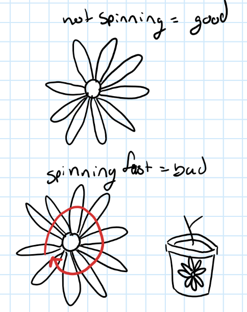

Calm Plant Watering Alert
Team members:
Camille Pouliot – 261114809
Émilia Gagné – 261119072
Helena Clifford – 261104576
User Observations
ID #
Observation
1. To decide if they are going to water their plant, user 1 dips their finger in the soil and estimates the plants’ humidity. If the soil is dry enough, they water the plant.
2. To decide if they are going to water their plant, user 2 estimates the time between the last time they watered their plants and now. 2 weeks have passed since the last watering, so they decide that they should water their plants.
3. To decide if they are going to water their plant, user 3 looks at their plant watering schedule and waters their plant when the schedule tells them to.
4. This user only waters their plant with leftover water from their glasses and water bottles.
5. This user visually sees that their plant lacks water. They recognize that the soil is dry. They decide not to water their plants because they don’t have the motivation to do so.
6. This user waters their plants when their family and friends make comments on how dry the plants’ soil is.
7. This user forgot to water their plant so often that it is now almost dead, so they have lost hope that the plant will survive and simply wait until it dries out completely.
Identifying the problem
Most of the users estimate whether their plants need water. None of them knows for sure if their plant is really in need of water. User #1 has to dirty their fingers by sticking them into dirt to check the soil humidity. Their estimation could be wrong because they are only checking the surface level soil. User #2 waters their plant when they estimate that enough time has passed. But some plants require watering every day, while some can go a month without water and die easily from being overwatered. This behavior could lead to wrong assumptions since every plant has different needs. User #4 only uses leftover water, which means that if there is not a lot of excess water around, they could be under-watering their plant and killing it. User 3 has taken into account all of the factors to know when to water their plants, but they end up having to keep track of a calendar and update it over time. Our proposed system could tell them when to water their plant by knowing exactly the appropriate humidity level for their plant.
Another issue we have seen with the users is that even when they know their plants require water, they sometimes lack the motivation to water them. There is no immediate positive feedback once they water their plants, and they don’t seem to care about watering their plants.
Personas
Persona #1: Disorganized: This persona only waters their plant when they think about it or when the occasion to water their plant presents itself. This groups the behaviours seen in user 2, 4 and 6. These users don’t have regular patterns in their watering schedules, and instead rely on remembering periodically that they need to water their plant, or someone else reminding them.
Persona #2: Structured: This persona knows when they have to water their plant. They rely on a self-made mechanism, but it requires them to check it often. This groups the behaviours seen in user 1 and 3. Those users were grouped because they water their plants on a regular basis and regularly check up on their plants to keep them healthy.
Persona #3: Unmotivated: This persona generally feels unmotivated to take care of their plant and often gives up on their plant once it looks unhealthy. This groups the behaviours seen in user 5 and 7. Those users were grouped because they don’t take care of their plant until it is too late to revive it, and then give up on that plant.
Use-case Scenario
For this use case, we will illustrate how our product could help someone with the disorganized persona
Our user is moving through their apartment. Before, they weren’t paying attention to their plant, but now they can see when they need to water their plant. They are used to seeing a green LED sensor, as they pay attention to it in their peripheral vision. The next time they pass through, the light has turned yellow, and this draws their attention. They find their closest water source, a glass of water and pour the water in. The sensors stay yellow, so they go fetch more water with their glass, and the sensor turns green again.
Parrot Flower Power
This is a device that has a sensor device that is directly pressed into the soil. It is good because it has a very accurate read on the humidity, moisture and air quality, but it is quite expensive at 80$+. Another downside is that the device is connected to a mobile app. Without checking the app, the user is not able to know whether they should water their plant.
Flower Care Sensor
This one has a slightly different design than the one above and does provide less data to the user, but it does come at a lower cost. However, the same issue arises- the product is only useful when checking the associated app.
Amazon Humidity Plant Monitor
A basic plant monitor that can be found on Amazon will provide the user with a small humidity scale indicating if the plant needs to be watered. These are affordable, between 15 and 20 dollars, but they are difficult to read.
Our plant monitor does not have a mobile app associated. Having the barrier of checking an app makes it more likely that the user will forget to water their plant. It is only half a product. For our product however, the feedback that the user must water their plan will be directly indicated on the device. Having a LED monitor would make it much more apparent to the user if the plant needs to be watered.
Persona #1, or the disorganized users, are unlikely to consistently check a mobile app or small humidity gauge, meaning they may still forget to water their plants with competing products. Structured users, as in Persona #2, who already rely on routines or schedules, might find existing app-based solutions useful, but they still require extra steps that reduce efficiency. Finally, Persona #3d the unmotivated users, are the least likely to open an app or interpret subtle indicators, so they especially benefit from our design’s immediate, visible feedback through LEDs and simple emojis. By directly integrating feedback into the user’s environment, our solution addresses the needs of all three personas more effectively than current market options
High Level Design
To design our system, we will use an arduino board to control the main logic of the system. We will read the humidity of the soil of the plant by sticking a humidity sensor in the pot. The plant will have three states, “Healthy”, “Dry”, and “Very Dry”. We will have a LCD display to portray the state of the plant, from a smiley emoji when the plant is healthy (healthy state), to a neutral face emoji when it needs some water (dry state), to a sad face emoji when the plants needs a lot of water (very dry). Similarly, LEDS light will go from green, to yellow, to red, to display the three states of the plant. Lastly, we will have a button to let the user select between three types of plants. Each type of plant will set their respective humidity thresholds.
Figure 1: Hardware requirements and setup. On the left, the overall system. On the right, the Arduino connections with the other hardware
We will provide a guide to the user to help them figure out which mode is best for their plants. Below are the three plants types we will be using:
Plant type
Description
Example
Hydrophytes
High water needs / Water loving
Ferns (e.g., Boston Fern, Bird's Nest Fern) -
Alocasia (Elephant Ear)
Calathea
Mesophytes
Moderate needs / Average conditions
Pothos (Epipremnum aureum)
Spider Plant (Chlorophytum comosum)
Peace Lily (Spathiphyllum)
Rubber Plant (Ficus elastica)
Philodendron (most varieties)
Dracaena (e.g., Dragon Tree)
Prayer Plant (Maranta leuconeura)
Xerophytes
Low Water Needs / Drought tolerant
Cactus
Succulents (e.g., Jade Plant - Crassula ovata, Aloe Vera, Echeveria, Haworthia, Kalanchoe)
Snake Plant
ZZ Plant (Zamioculcas zamiifolia)
Ponytail Palm (Beaucarnea recurvata)
Agave
Table 1: Three types of plants for the system
For the software, we will build a simple state machine. In the main loop, we will check for the humidity value and update the state of the machine based on that. See figure 2 for the state machine diagram. Depending of the humidity value we read, we will update the LED lights and the LCD display.

Figure 2: State machine diagram of the software
On Figure 3, you will see a high-level implementation of the main loop. We will poll for the humidity value and update the lights and display accordingly. On figure 3, you will also see a high-level implementation for the button. It will be an interrupt that switches the “type of plant” mode, as described on Table 1.
Figure 3: High-level implementation of the main loop and the OnButtonPress interrupt
Justifying feasability
Our project has three main components. We need to do the hardware setup, the code for the main loop, and the code for the interrupt. For the hardware setup, as seen on Figure 1, our team will have to connect the LCD display and the LED lights to the arduino while they are fixed to be around the potted plant. We will need to have a flexible design such that the setup can work for different sizes of potted plants. We were thinking of having a breadboard with a 3D printed casing that is mounted on an elastic that wraps itself around the pot. We want the LEDS to be fixed on the breadboard. We are estimating around 20 hours of work for this, since we will need to create the CADing and make different adjustement to the design. Our team lacks CADing skills, so a lot of time will be spent on learning how to do that. Émilia has extensive knowledge on the I/O pins for arduino and can very easily do the required connections for the hardware button, sensor, and LCD display. Having a stable structure to wrap around the pots will be a challenge, so that increased our time estimate.
In terms of software, multiple elements need to be implemented. First, we need to display the three states of the plant on the LCD display. We want to iterate over our design, but currently, we settled on using an emoji to display the plant’s state. We expect around 5 hrs to code the display and explore different UI options. Camille has previous knowledge with LCD displays, so she will be able to code it. We will also need to code a function to change the color of the RGB LEDs, which will require another hour or so. Émilia has worked with RGB LEDs before, so she has the knowledge to do this. We will need to implement function to correctly read the humidity sensor reading and map that to the three groups of plant’s need to find the correct threshold. Coding the humidity sensor reading and mapping them to their appropriate state depending on the plant will take around 5 hours. Helena will be in charge of this because of her expertise in botanicals. We will need to implement a state machine for the plant, such that depending on the state of the plant, we update the user’s feedback through the LEDs and the display. That will take around 2 hrs. Finally, we need to implement the interrupt for the button, and the associated UI display when changing the type of plant by pressing the button. Camille will be in charge of this because of her previous knowlede in interrupts. She will spend an estimated 5 hours on this.
Finally, Helena will be in charge of collecting user experience such that we can improve our design throughout each phases of the design. We expect 30 hours to be spent between the team members in creating user questionnaire, collecting user data and iterating over the design to better fit user’s needs. Adding everything up, we should spend between 60-70 hours on this project total, split across our 3 team members.
Low-Fidelity Prototype
Section 1: Design Concepts
Idea #1 : LCD screen
The user checks this lcd screen to know if they have to water their plant
Idea #2 : LED flower
LED in 3D printed flower stuck to the pot. Green for good, yellow for ok and red for bad
Idea #3: Mechanical flower
As the soil gets dryer the flower closes.
Idea #4: Extending flower
The length of the flower varies depending on the soil. Fully out means good and fully in means bad
Idea #5: Spinning flower

The spinning speed varies depending on the soil. Not spinning means good and spinning fast means bad.
Idea #6: Proximity beeping
Will beep if bad and the proximity sensor is triggered
Idea #7: Digital Hourglass
A digital hourglass that tracks the time until the plant needs to be watered next based on humidity levels in the pot and time estimation of the evaporation.
Idea #8:
Plays music if the plant needs water
Over watered: Titanic theme song
Needs water: A cowboy theme music reminiscent of the deserts of the far west.
Phase 2 – Ideas to prototype
Idea #1
For this idea it was decided to combine the lcd idea with the led idea to create a polyvalent system that yields basic information from afar and detailed feedback when close by.
The led will represent the state of the plant for afar and the screen will do the same thing when close but also allow the user to have more detailed information on the plant and navigate the menu with a joystick. All of this will be stuck on the pot of the plant.
Idea #2
For this idea we reused the spinning flower and a bit of the extending prototype for its height to yield information from afar.
The speed of the fan is influenced by soil and a num pad allows for basic mode navigation.The fan is to be put on the edge of the pot.
Section 2: Prototypes
Prototype 1- LED + touchscreen
Prototype 2- Spining flower with number pad
Section 3: Usability Goals
A convincing rationale is offered for the described usability goals; the benchmark tasks are appropriate for these goals, relate to the most important elements of system functionality, and only tell the user what (and not how) to do.
Users should be able to complete the installation process of the device in under 15 minutes.
Rational: The design should be minimalist to reduce the cognitive load. The device should be easy to install to improve usability and satisfaction with the product.
Users should clearly be able to view the status of the plant at a glance from a maximal distance of 5 meters.
Rational: The main goal of the device is to inform the user of the state of the plant by impowering their peripheral information. Users are usually seeing the potted plants when they are inside their home, so a distance of 5 meters is reasonable. Also, based on the 10 heuristic goals, users should always be able to see what is going on with the system through appropriate feedback within a reasonable amount of time.
The system should give feedback to the user on the state of the plant’s soil after it has been watered, with a maximum delay of 1 minute.
Rational: It is important for the user to have feedback on their action of watering the plant. The system should let the user know if they made an error while performing the action, such as watering too much or too little.
Section 4: Benchmark Tasks
| Identifier | Task | Section |
|---|
| Task 1 | Setup the device on your potted plant. | Setting up the device |
| Task 2 | Select the appropriate device mode for your type of plant. | Setting up the device |
| Task 3 | Determine the current water needs of the plant. | Viewing the plant status |
| Task 4 | Decide if you would water the plant or not. | Viewing the plant status |
| Task 5 | Water the plant based on its water needs | Watering the plant |
| Task 6 | Determine the current state of the plant | Watering the plant |
| Task 7 | Decide if you would water the plant more or not. | Watering the plant |
Section 5: Test Materials
5.1: Observer Briefing
The observer will first introduce the context of the test to the end user based on the information found in section 5.2. Then, the end-user, also called the evaluator, shall fill out the pretest questionnaire found in section 5.3. Then, the observer should start the recording of the user test. They shall give the user the test script found in section 5.6. The observer shall record what happens during the evaluation in the appropriate data collection sheet, which can be found in the section 5.7. They should not interact with the user, and let the user make their own decisions. If the user is stuck an cannot proceed with the task, then they can guide them to proceed with the test and record this in the datasheet in the comment section. Once the user is done with all the tasks, they should stop the recording and hand the user the post-questionnaire which can be found in section 5.8.
5.2: User Introduction
Hi and thank you for taking part in this short usability test. The goal today is to see how intuitive and practical our “Calm Plant Watering Alert” system feels when you’re using it for the first time. This isn’t a test of you or your abilities, it’s a test of our design, so please don’t worry about doing everything ‘perfectly’.
We will ask you to interact with a low-fidelity paper prototype that represents the basic layout and functions of our product. As you go through the tasks, please try to think out loud. Share what you notice, what confuses you, or what feels natural. Your honest reactions will help us understand what’s working and what we could improve in the next version.
If at any point you feel uncomfortable or unsure, you can pause or stop the test. The session should take about 10-15 minutes. Thank you again for helping us!
5.3: Pretest Questionnaire
Please take a few minutes to answer these questions before starting the test. Your responses will help us understand your background and how it might influence your experience with the prototype.
How many plants do you currently own?
0
1-3
4-7
8+
Prefer not to answer
How often do you usually water your plants?
Daily
Every few days
Weekly
When I remember
Prefer not to answer
Have you ever used any kind of smart or automated plant care system before?
Yes
No (d)
Prefer not to answer
On a scale from 1-5, how confident are you in your ability to take care of plants? You can prefer not to answer.
1=Not confident at all
5=Very confident
Prefer not answer
What do you usually find most difficult about keeping your plants healthy? You can prefer not to answer.
... (open ended answer)
What kind of feedback would you personally find most helpful from a system like this? For example, visual cues, sounds, screen info, etc. You can prefer not to answer
... (open ended answer)
5.4: User/Training Documentation
The documentation that will be presented to the user is the pre-test questionnaire in 5.3, the test script in 5.6 in an electrical format, the post-test questionnaire found in 5.8, and the two paper prototypes presented in section 2. There is no additional documentation.
5.5: Tasks Description
| Identifier |
Task |
Description |
| 1 | Setup the device on your potted plant. | The user shall place the device around their potted plant and place the humidity sensor inside the soil. |
| 2 | Select the appropriate device mode for your type of plant. | The user should press on the button to select one of the three device mode for their specific plant. They need to choose the correct mode based on their plant type. |
| 3 | Determine the current water needs of the plant. | The user should check the status light and LCD screen to find what the water needs of the plant are. They should state their findings out loud. |
| 4 | Decide if you would water the plant or not. | The user shall decide if they want to water the plant based on the information they gathered at the previous state, They should say their choice out loud and explain their reasoning. |
| 5 | Water the plant based on its water needs | The user should water the plants based on what they expect the water plant’s needs are |
| 6 | Determine the current state of the plant | The user should check the status light and LCD screen to find what the water needs of the plant are. They should state their findings out loud. |
| 7 | Decide if you would water the plant more or not. | The user shall decide if they want to water the plant based on the information they gathered at the previous state, They should say their choice out loud and explain their reasoning. |
5.6: Test Script
1. Setup the device on your potted plant.
2. Select the appropriate device mode for your type of plant.
3. Determine the current water needs of the plant. State your finding out loud.
4. Decide if you want to water the plant or not. State your decision out loud and explain your rationale.
5. Water the plant based on its water needs.
6. Determine the current state of the plant. State your finding out loud.
7. Decide if you want to water the plant or not. State your decision out loud and explain your rationale.
5.7: Data Collection Sheet
| Participant Name |
Date |
Observer |
Prototype # |
| Use the task rows below for each participant. |
| Task # |
Task Description |
Completed |
Errors made |
Time to complete |
Notes |
| 1 | Setup the device on your potted plant. | | | | |
| 2 | Select the appropriate device mode for your type of plant. | | | | |
| 3 | Determine the current water needs of the plant. | | | | |
| 4 | Decide if you want to water the plant or not. | | | | |
| 5 | Water the plant based on its water needs. | | | | |
| 6 | Determine the current state of the plant. | | | | |
| 7 | Decide if you want to water the plant more or not. | | | | |
| Additional Comments: |
5.8: Post-Test Questionnaire
Please answer these questions after having completed the test.
Overall, how easy was it to understand how the system works?
Very difficult
Difficult
Neutral
Easy
Very Easy
Prefer not to answer
How confident do you feel that you could use this sytem at home without assistance?
Not confident
Slightly
Moderately
Confident
Very Confident
Prefer not to answer
How clear and useful were the visual indicators?
Not at all
Slightly
Moderately
Very
Extremely
Prefer not to answer
What did you like most about the design or experience? You can prefer not to answer.
... (Open ended response)
What felt confusing, frustrating or unnecessary? You can prefer not to answer.
... (Open ended response)
Do you have any suggestions for improvement? You can prefer not to answer
... (Open ended response)
Any other comments or feedback? This question is optional
... (Open ended response)
Summary of Test Results
Results Table
| Prototype |
Participant |
Setup |
Interface Experience |
Feedback |
Likes |
Comments |
| 1-LED + joystick | Natalie Ruest | Quick and intuitive | Found joystick confusing and unclear how to select a mode. | LED color system was clear and easy to interpret from a distance | Simple design and family friendly | Replace joysticks with more intuitive control like buttons. |
| 1-LED + joystick | Mathias Gagne | Very easy to understand | Did not know if they had to press on the joystick to select the mode | Found the status of the plant too wordy. | They like the LED reminders | N/A |
| 2. Spinning flower | Sofija Kuzmanovic | Put too close to center of plant the first time | Found height effect to be natural | Does the plant update automatically after watering? | Enjoyed immediate feedback as she could see what is happening | Add real-time feedback after watering. Clarify meaning indicators. |
| 2- Spinning flower | Dawn Hoffer | Understood the flow right away | Confused about what to click | Wanted more context beyond watering (Sunlight, overwatering) | Appreciated simplicity, said anyone could do it. | Expand for sunlight and overwatering |
| Short video of interview: https://youtube.com/shorts/xvZ8LhTpyzY?si=r3dLSLKtrZCEYLVr |
Observations Table
| Category | Findings |
|---|
| General Success | All participants completed every task successfully. Setup was universally described as quick and easy. LED color cues were intuitive and effective, whereas height was also a simple indicator. |
| Main Usability Challenges | The joysticks caused confusion, especially with mode selection. Participants using the numpad were unclear of what the buttons did each time. |
| Prototype Comparison | The simple to see height difference allowed the users to see from a distance whether the plant needed to be watered. However, users still valued LED system for its clear visual cues from peripheral vision. |
| User Preferences | Participants preferred systems that feel calm, minimal and easy to read at a glance. The combination of LED indicators for peripheral awareness as well as the large height indicator allowed users to understand clearly what is going on. |
| Next Steps | Combine the LED indicator’s clarity with the touchscreen’s interactivity. Simplify mode selection of numbad and ensure immediate, visible feedback after watering. Consider expanding functionality to address overwatering and sunlight exposure. |
Appendices
Annexe A: Participant A results (Natalie Ruest)
5.3: Pretest Questionnaire:
Answer: 3
What do you usually find most difficult about keeping your plants healthy?
Answer: It is difficult when they become yellow, I don’ know what to do, anxious about overwatering plants
What kind of feedback would you personally find most helpful from a system like this?
Answer: They want feedback, prefer visual over audio
| Task # | Task Description | Completed | Errors made | Time | Notes |
| 1 | Setup the device on your potted plant. | X | N/A | 10 seconds | Very easy to stick sensor |
| 2 | Select the appropriate device mode for your type of plant. | X | Does not know how to use joystick; unclear click; modes unclear | 2 min | Not user friendly; hard to understand; does not like the joystick |
| 3 | Determine the current water needs of the plant. | X | N/A | 10 sec | N/A |
| 4 | Decide if you want to water the plant or not. | X | N/A | 10 sec | N/A |
| 5 | Water the plant based on its water needs. | X | N/A | 10 sec | N/A |
| 6 | Determine the current state of the plant. | X | N/A | 10 sec | N/A |
| 7 | Decide if you want to water the plant or not. | X | N/A | 10 sec | N/A |
Post-Test Questionnaire highlights:
What did you like most about the design or experience?
The colors, red, green, yellow is easy to understand
What felt confusing, frustrating or unnecessary?
Changing the modes, didn’t understand what they meant. Why is there arrows if it’s a joystick?
Suggestions for improvement:
Healthy keyword is more toward the overall health, but we are interested by the amount of water
Any other comments or feedback?
It’s fun. I think my other family members would be more interested in watering plants.
Annexe B: Participant B results (Sofija Kuzmanovic)
Pretest: Answer: 3; Most difficult: Where to place in terms of sunlight; Preferred feedback: Light, visual, swipe away notifications from an app.
| Task # | Task Description | Completed | Errors made | Time | Notes |
|---|
| 1 | Setup the device on your potted plant. | X | Tried to put on the stem | 5 seconds | |
| 2 | Select the appropriate device mode for your type of plant. | X | N/A | 2 min | N/A |
| 3 | Determine the current water needs of the plant. | X | Confused about whether she should water it. | 10 sec | N/A |
| 4 | Decide if you want to water the plant or not. | X | N/A | 10 sec | N/A |
| 5 | Water the plant based on its water needs. | X | N/A | 10 sec | N/A |
| 6 | Determine the current state of the plant. | X | N/A | 10 sec | Looking at the screen |
| 7 | Decide if you want to water the plant or not. | X | Would water it until the light goes away | 10 sec | N/A |
Post-Test highlights:
Liked: The moving up and down
Confusing: How to use the numpad to navigate
Suggestions: Difference between watering more often or giving it more water once. Should i be giving it more water often or just once.
Any other comments: N/A
Annexe C: Participant C results (Dawn Hoffer)
Pretest: Answer: 3; Most difficult: Whether you are overwatering them; Preferred feedback: Something that told her when its had enough water
| Task # | Task Description | Completed | Errors made | Time | Notes |
|---|
| 1 | Setup the device on your potted plant. | X | N/A | 2 seconds | |
| 2 | Select the appropriate device mode for your type of plant. | X | Does not understand whether height made it more or less likely to be watered | 2 min | |
| 3 | Determine the current water needs of the plant. | X | N/A | 10 sec | N/A |
| 4 | Decide if you want to water the plant or not. | X | N/A | 10 sec | Would see if it is absorbing water. |
| 5 | Water the plant based on its water needs. | X | N/A | 10 sec | N/A |
| 6 | Determine the current state of the plant. | X | N/A | 10 sec | N/A |
| 7 | Decide if you want to water the plant or not. | X | N/A | 10 sec | N/A |
Post-Test highlights:
Liked: Very simple for anyone to understand
Confusing: Going off of the words, it doesn’t always mean water, it could mean inadequate sunlight or plant disease
Suggestions: If the indicator could say what is lacking, if you overwatered setting. For simpicity have that but alternate options for other things.
Any other comments: N/A
Annexe D: Participant D results (Mathias Gagne)
Pretest: Answer: 1; Most difficult: Knowing the right amount of water to give them; Preferred feedback: Anything that I can see when I pass by the plant
| Task # | Task Description | Completed | Errors made | Time | Notes |
|---|
| 1 | Setup the device on your potted plant. | X | N/A | 10 seconds | Very clear |
| 2 | Select the appropriate device mode for your type of plant. | X | N/A | 20 sec | Knew how to navigate |
| 3 | Determine the current water needs of the plant. | X | N/A | 10 sec | User thinks the plant needs a bit of water |
| 4 | Decide if you want to water the plant or not. | X | N/A | 10 sec | User does not want to water the plant |
| 5 | Water the plant based on its water needs. | X | N/A | 10 sec | N/A |
| 6 | Determine the current state of the plant. | X | N/A | 10 sec | Understand that the plant is health |
| 7 | Decide if you want to water the plant or not. | X | N/A | 10 sec | User stops watering |
Post-Test highlights:
Likes: They like the LEDS
Confusing: They don’t know if they have to select or not when navigating the menu. Press to select or does it select on its own
Suggestions: The status is yoo wordy, need some water could be shortened
Any other comments: Nothing to add
Annexe E: Consent Form 1
REB File #1
25-08-071
Consent Form
Human-Computer Interaction Course Projects
Student Investigators: Camille Pouliot, camille.pouliot@mail.mcgill.ca
Emilia Gagne, emilia.gagne@mail.mcgill.ca
Helena Clifford, helena.clifford@mail.mcgill.ca
You are being invited to participate in a study affiliated with the McGill University course “Human-Computer Engineering” (ECSE 424/524). Please note that we are seeking people that own one or more plants.
Purpose: The overall purpose of this research is to test prototypes from paper to beta to give feedback on the usability of the product.
What you will be asked to do: After you have read this document, I/we will respond to any questions or concerns that you may have. Once you have signed this consent form, you will be asked to:
provide information as part of a screening process to verify your eligibility for the study
complete a questionnaire
answer interview questions
be observed while performing a routine activity (e.g., finding directions using online maps)
interact with physical objects (e.g., a paper prototype)
interact with digital systems (e.g., a laptop)
Your participation in these activities is completely voluntarily. You may choose not to take part in any activity, or not to respond to any question.
Each experimental session should take about 10 min. There will be a total of 3 sessions throughout the semester. You may be asked to participate in more than one such session, but you are not obligated to do so.
The sessions may also be video and/or audio recorded. You have the option not to be video/audio recorded.
How the data collected will be used: Data collected (including any audio/video recordings) will be used for analysis and may also be used for class project presentations and other research presentations. Only the student researchers, TAs, instructor, and in the case of graduate projects, the student's graduate supervisor, will have access to these materials.
You have the right to consult your study file in order to verify the personal information gathered, and to have it corrected if necessary, by contacting Camille Pouliot (camille.pouliot@mail.mcgill.ca).
Compensation: There is no compensation for participating in this study.
Confidentiality: The results of your participation will be reported without any reference to you specifically. Please note that while the collected data will be stored in Canada, it may leave Quebec.
Your data will be treated confidentially and your identity will not be revealed in reporting the study results, with the exception of video/audio recordings that may be presented as part of an in-class presentation. However, if such recordings are to be used in any other venue, such as a scholarly conference, this will require that participants be non-identifiable in the video/images.
Data Retention: Identifiable data and video/audio recordings will be stored securely on a password protected computer account or Microsoft OneDrive for Business. All digital data will be encrypted. All data from individual participants will be coded so that their anonymity will be protected in any reports, research papers, thesis documents, and presentations that result from this work.
Withdrawal from the Study: You may withdraw from the study at any time and request that your data be deleted. However, in most cases, by the end of the semester, after analysis of the data has been completed, or the results of the study reported, or after the keyfile that links your identity to the data has been destroyed, it may no longer be possible to delete your data. We expect to delete the keyfile within 3 months of the study.
Contact for information about the rights of research subjects:
Should you have any questions about this study, you may contact the course instructor, Prof. Jeremy Cooperstock at jer@cim.mcgill.ca or by telephone at 514-398-5992.
If you have any ethical concerns or complaints about your participation in this study, and want to speak with someone not on the research team, please contact the Research Ethics Board Office, at Daniel.tesolin@mcgill.ca or 514-398-5410, citing REB file number 25-08-071.
Indicate your agreement to one of the following options by providing your initials:
I consent to being video/audio recorded for this study. NR
I consent to being audio recorded only (no video) for this study. _______
I do NOT consent to being video/audio recorded for this study. _______
Please sign below if you have read the above information and consent to participate in this study. Agreeing to participate in this study does not waive any of your rights or release the researchers from their responsibilities. Your signed form may be returned electronically by email to camille.pouliot@mail.mcgill.ca
Participant’s Name: (please print) Natalie Ruest
Participant’s Signature: Natalie Ruest Date: 19 Octobre 2025
Annexe F: Consent Form 2
REB File #2
25-08-071
Consent Form
Human-Computer Interaction Course Projects
Student Investigators: Camille Pouliot, camille.pouliot@mail.mcgill.ca
Emilia Gagne, emilia.gagne@mail.mcgill.ca
Helena Clifford, helena.clifford@mail.mcgill.ca
You are being invited to participate in a study affiliated with the McGill University course “Human-Computer Engineering” (ECSE 424/524). Please note that we are seeking people that own one or more plants.
Purpose: The overall purpose of this research is to test prototypes from paper to beta to give feedback on the usability of the product.
What you will be asked to do: After you have read this document, I/we will respond to any questions or concerns that you may have. Once you have signed this consent form, you will be asked to:
provide information as part of a screening process to verify your eligibility for the study
complete a questionnaire
answer interview questions
be observed while performing a routine activity (e.g., finding directions using online maps)
interact with physical objects (e.g., a paper prototype)
interact with digital systems (e.g., a laptop)
Your participation in these activities is completely voluntarily. You may choose not to take part in any activity, or not to respond to any question.
Each experimental session should take about 10 min. There will be a total of 3 sessions throughout the semester. You may be asked to participate in more than one such session, but you are not obligated to do so.
The sessions may also be video and/or audio recorded. You have the option not to be video/audio recorded.
How the data collected will be used: Data collected (including any audio/video recordings) will be used for analysis and may also be used for class project presentations and other research presentations. Only the student researchers, TAs, instructor, and in the case of graduate projects, the student's graduate supervisor, will have access to these materials.
You have the right to consult your study file in order to verify the personal information gathered, and to have it corrected if necessary, by contacting Camille Pouliot (camille.pouliot@mail.mcgill.ca).
Compensation: There is no compensation for participating in this study.
Confidentiality: The results of your participation will be reported without any reference to you specifically. Please note that while the collected data will be stored in Canada, it may leave Quebec.
Your data will be treated confidentially and your identity will not be revealed in reporting the study results, with the exception of video/audio recordings that may be presented as part of an in-class presentation. However, if such recordings are to be used in any other venue, such as a scholarly conference, this will require that participants be non-identifiable in the video/images.
Data Retention: Identifiable data and video/audio recordings will be stored securely on a password protected computer account or Microsoft OneDrive for Business. All digital data will be encrypted. All data from individual participants will be coded so that their anonymity will be protected in any reports, research papers, thesis documents, and presentations that result from this work.
Withdrawal from the Study: You may withdraw from the study at any time and request that your data be deleted. However, in most cases, by the end of the semester, after analysis of the data has been completed, or the results of the study reported, or after the keyfile that links your identity to the data has been destroyed, it may no longer be possible to delete your data. We expect to delete the keyfile within 3 months of the study.
Contact for information about the rights of research subjects:
Should you have any questions about this study, you may contact the course instructor, Prof. Jeremy Cooperstock at jer@cim.mcgill.ca or by telephone at 514-398-5992.
If you have any ethical concerns or complaints about your participation in this study, and want to speak with someone not on the research team, please contact the Research Ethics Board Office, at Daniel.tesolin@mcgill.ca or 514-398-5410, citing REB file number 25-08-071.
Indicate your agreement to one of the following options by providing your initials:
I consent to being video/audio recorded for this study. _______
I consent to being audio recorded only (no video) for this study. _______
I do NOT consent to being video/audio recorded for this study. MG
Please sign below if you have read the above information and consent to participate in this study. Agreeing to participate in this study does not waive any of your rights or release the researchers from their responsibilities. Your signed form may be returned electronically by email to camille.pouliot@mail.mcgill.ca
Participant’s Name: (please print) Mathias Gagne
Participant’s Signature: Mathias Gagne Date: 20 octobre 2025
Annexe G: Consent Form 3
REB File #2
25-08-071
Consent Form
Human-Computer Interaction Course Projects
Student Investigators: Camille Pouliot, camille.pouliot@mail.mcgill.ca
Emilia Gagne, emilia.gagne@mail.mcgill.ca
Helena Clifford, helena.clifford@mail.mcgill.ca
You are being invited to participate in a study affiliated with the McGill University course “Human-Computer Engineering” (ECSE 424/524). Please note that we are seeking people that own one or more plants.
Purpose: The overall purpose of this research is to test prototypes from paper to beta to give feedback on the usability of the product.
What you will be asked to do: After you have read this document, I/we will respond to any questions or concerns that you may have. Once you have signed this consent form, you will be asked to:
provide information as part of a screening process to verify your eligibility for the study
complete a questionnaire
answer interview questions
be observed while performing a routine activity (e.g., finding directions using online maps)
interact with physical objects (e.g., a paper prototype)
interact with digital systems (e.g., a laptop)
Your participation in these activities is completely voluntarily. You may choose not to take part in any activity, or not to respond to any question.
Each experimental session should take about 10 min. There will be a total of 3 sessions throughout the semester. You may be asked to participate in more than one such session, but you are not obligated to do so.
The sessions may also be video and/or audio recorded. You have the option not to be video/audio recorded.
How the data collected will be used: Data collected (including any audio/video recordings) will be used for analysis and may also be used for class project presentations and other research presentations. Only the student researchers, TAs, instructor, and in the case of graduate projects, the student's graduate supervisor, will have access to these materials.
You have the right to consult your study file in order to verify the personal information gathered, and to have it corrected if necessary, by contacting Camille Pouliot (camille.pouliot@mail.mcgill.ca).
Compensation: There is no compensation for participating in this study.
Confidentiality: The results of your participation will be reported without any reference to you specifically. Please note that while the collected data will be stored in Canada, it may leave Quebec.
Your data will be treated confidentially and your identity will not be revealed in reporting the study results, with the exception of video/audio recordings that may be presented as part of an in-class presentation. However, if such recordings are to be used in any other venue, such as a scholarly conference, this will require that participants be non-identifiable in the video/images.
Data Retention: Identifiable data and video/audio recordings will be stored securely on a password protected computer account or Microsoft OneDrive for Business. All digital data will be encrypted. All data from individual participants will be coded so that their anonymity will be protected in any reports, research papers, thesis documents, and presentations that result from this work.
Withdrawal from the Study: You may withdraw from the study at any time and request that your data be deleted. However, in most cases, by the end of the semester, after analysis of the data has been completed, or the results of the study reported, or after the keyfile that links your identity to the data has been destroyed, it may no longer be possible to delete your data. We expect to delete the keyfile within 3 months of the study.
Contact for information about the rights of research subjects:
Should you have any questions about this study, you may contact the course instructor, Prof. Jeremy Cooperstock at jer@cim.mcgill.ca or by telephone at 514-398-5992.
If you have any ethical concerns or complaints about your participation in this study, and want to speak with someone not on the research team, please contact the Research Ethics Board Office, at Daniel.tesolin@mcgill.ca or 514-398-5410, citing REB file number 25-08-071.
Indicate your agreement to one of the following options by providing your initials:
I consent to being video/audio recorded for this study. _______
I consent to being audio recorded only (no video) for this study. _______
I do NOT consent to being video/audio recorded for this study. SK
Please sign below if you have read the above information and consent to participate in this study. Agreeing to participate in this study does not waive any of your rights or release the researchers from their responsibilities. Your signed form may be returned electronically by email to camille.pouliot@mail.mcgill.ca
Participant’s Name: (please print) Sofija Kuzmanovic
Participant’s Signature: Sofija Kuzmanovic Date: 20 octobre 2025
Annexe H: Consent Form 4
REB File #2
25-08-071
Consent Form
Human-Computer Interaction Course Projects
Student Investigators: Camille Pouliot, camille.pouliot@mail.mcgill.ca
Emilia Gagne, emilia.gagne@mail.mcgill.ca
Helena Clifford, helena.clifford@mail.mcgill.ca
You are being invited to participate in a study affiliated with the McGill University course “Human-Computer Engineering” (ECSE 424/524). Please note that we are seeking people that own one or more plants.
Purpose: The overall purpose of this research is to test prototypes from paper to beta to give feedback on the usability of the product.
What you will be asked to do: After you have read this document, I/we will respond to any questions or concerns that you may have. Once you have signed this consent form, you will be asked to:
provide information as part of a screening process to verify your eligibility for the study
complete a questionnaire
answer interview questions
be observed while performing a routine activity (e.g., finding directions using online maps)
interact with physical objects (e.g., a paper prototype)
interact with digital systems (e.g., a laptop)
Your participation in these activities is completely voluntarily. You may choose not to take part in any activity, or not to respond to any question.
Each experimental session should take about 10 min. There will be a total of 3 sessions throughout the semester. You may be asked to participate in more than one such session, but you are not obligated to do so.
The sessions may also be video and/or audio recorded. You have the option not to be video/audio recorded.
How the data collected will be used: Data collected (including any audio/video recordings) will be used for analysis and may also be used for class project presentations and other research presentations. Only the student researchers, TAs, instructor, and in the case of graduate projects, the student's graduate supervisor, will have access to these materials.
You have the right to consult your study file in order to verify the personal information gathered, and to have it corrected if necessary, by contacting Camille Pouliot (camille.pouliot@mail.mcgill.ca).
Compensation: There is no compensation for participating in this study.
Confidentiality: The results of your participation will be reported without any reference to you specifically. Please note that while the collected data will be stored in Canada, it may leave Quebec.
Your data will be treated confidentially and your identity will not be revealed in reporting the study results, with the exception of video/audio recordings that may be presented as part of an in-class presentation. However, if such recordings are to be used in any other venue, such as a scholarly conference, this will require that participants be non-identifiable in the video/images.
Data Retention: Identifiable data and video/audio recordings will be stored securely on a password protected computer account or Microsoft OneDrive for Business. All digital data will be encrypted. All data from individual participants will be coded so that their anonymity will be protected in any reports, research papers, thesis documents, and presentations that result from this work.
Withdrawal from the Study: You may withdraw from the study at any time and request that your data be deleted. However, in most cases, by the end of the semester, after analysis of the data has been completed, or the results of the study reported, or after the keyfile that links your identity to the data has been destroyed, it may no longer be possible to delete your data. We expect to delete the keyfile within 3 months of the study.
Contact for information about the rights of research subjects:
Should you have any questions about this study, you may contact the course instructor, Prof. Jeremy Cooperstock at jer@cim.mcgill.ca or by telephone at 514-398-5992.
If you have any ethical concerns or complaints about your participation in this study, and want to speak with someone not on the research team, please contact the Research Ethics Board Office, at Daniel.tesolin@mcgill.ca or 514-398-5410, citing REB file number 25-08-071.
Indicate your agreement to one of the following options by providing your initials:
I consent to being video/audio recorded for this study. _______
I consent to being audio recorded only (no video) for this study. _______
I do NOT consent to being video/audio recorded for this study. DH
Please sign below if you have read the above information and consent to participate in this study. Agreeing to participate in this study does not waive any of your rights or release the researchers from their responsibilities. Your signed form may be returned electronically by email to camille.pouliot@mail.mcgill.ca
Participant’s Name: (please print) Dawn Hoffer
Participant’s Signature: Dawn Hoffer Date: 20 octobre 2025